항공산업기사 (2004-09-05 기출문제)
1과목: 항공역학
1. 초음속 흐름속에 쐐기형 에어포일이 그림과 같이 놓여져 있다. 에어포일 주위에 충격파, 팽창파가 생기고 초음속 흐름이 지나고 있다. 다음의 설명에서 틀린 것은?
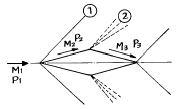
- ①충격파 M1＞M2, P1＜P2
- ②팽창파 M2＞M3, P1＜P2
- ①충격파 M1＞M2, P2＞P3
- ②팽창파 M2＜M3, P1＜P2
(정답률: 66%)

2. 프로펠러 항공기가 최대항속시간으로 비행할 수 있기 위한 조건은?
- (
 )최대
)최대 - (
 )최대
)최대 - (
 )최대
)최대 - (
 )최대
)최대
(정답률: 64%)
3. 고양력 장치의 원리를 가장 올바르게 설명한 것은?
- 최대양력 계수 CLmax의 값을 증가시켜 실속속도를 감소시키는 것이다.
- 레이놀즈수를 증가시켜서 항력을 감소시키는 것이다.
- 날개 면적을 줄여서 날개의 항력을 감소시키는 것이다.
- 최대 양력 계수 CLmax의 값을 증가시켜 이륙속도를 증가시키는 것이다.
(정답률: 54%)
4. 레이놀즈수(Reynolds Number : Re)에 대한 설명 중에서 가장 관계가 먼 내용은?
- Re = ρ VL/μ = VL/ν 로 나타낼 수 있다. (ν : 동점성계수)
- 관성력과 점성력의 비를 표시한다.
- Re의 단위는 cm2/sec이다.
- 천이현상이 일어나는 Re를 임계 레이놀즈수라 한다.
(정답률: 87%)
5. 비행기가 상승함에 따라 점점 상승율이 떨어진다. 절대 상승 한계에서 이용 마력과 필요 마력과의 관계를 가장 올바르게 표현한 것은?
- 이용 마력이 필요 마력 보다 크다.
- 이용 마력과 필요 마력이 같다.
- 이용 마력이 필요 마력 보다 작다.
- 고도에 따라 마력이 변하므로 비교할 수 없다.
(정답률: 60%)
6. 비행기의 수직꼬리날개 앞 동체에 붙어 있는 도살 핀(Dorsal fin)의 가장 중요한 역할은 무엇인가?
- 세로 안정성을 좋게 한다.
- 가로 안정성을 좋게 한다.
- 방향 안정성을 좋게 한다.
- 구조 강도를 좋게 한다.
(정답률: 87%)
7. 비행기의 조종간에 걸리는 힘을 적게하기 위해 여러 가지 장치를 사용하여 힌지 모멘트를 조절한다. 힌지 모멘트를 조절하기 위한 장치가 아닌 것은?
- 혼 밸런스(Horn Balance)
- 오버행 밸런스(Overhang Balance)
- 서보 탭(servo tabs)
- 스포일러(Spoilers)
(정답률: 83%)
8. 프로펠러의 피치 분포(pitch distribution)를 가장 올바르게 설명한 것은?
- 프로펠러 허브로부터 깃 끝까지의 피치각의 점진적인 변화
- 프로펠러 허브로부터 깃 끝까지의 슬립각의 점진적인 변화
- 프로펠러 허브로부터 깃 끝까지의 받음각의 점진적인 변화
- 프로펠러 허브로부터 깃 끝까지의 깃각의 점진적인 변화
(정답률: 51%)
9. 실속속도가 160㎞/h이고 양항비가 15인 비행기가 마찰계수 0.06인 활주로에 착륙하는 경우, 이 비행기의 착륙 활주 거리는 약 얼마가 되는가?
- 1025m
- 886m
- 775m
- 630m
(정답률: 31%)
10. 받음각이 클 때 기체전체가 실속되고 그 결과 롤링과 요잉을 수반하므로서 나선을 그리면서 고도가 감소되는 비행 상태는?
- 스핀(spin) 비행 상태
- 더치 롤(Dutch Roll)비행 상태
- 크랩 방식(Crab Method)에 의한 비행 상태
- 윙다운 방식(Wing Down Method)에 의한 비행 상태
(정답률: 80%)
11. 비행기의 실속속도가 150[m/sec] 인 비행기가 해면상 가까이 에서 60도의 경사각으로 선회 비행하는 경우 실속속도는?
- 150[m/sec]
- 173[m/sec]
- 212[m/sec]
- 300[m/sec]
(정답률: 52%)
12. 유도항력 계수에 대한 설명으로 가장 거리가 먼 것은?
- 양력 계수의 제곱에 비례한다.
- 항공기 속도에 비례한다.
- 스팬 효율 계수에 반비례한다.
- 날개의 유효 가로세로비에 반비례한다.
(정답률: 70%)
13. NACA 23015 에서 ˝3˝ 의 뜻을 가장 올바르게 표현한 것은?
- 최대 캠버의 크기가 시위의 3%
- 최대 캠버의 위치가 시위의 3%
- 최대 캠버의 위치가 시위의 15%
- 최대 두께의 위치가 시위의 15%
(정답률: 71%)
14. 상반각(Dihedral angle)에 대한 설명으로 가장 올바른 것은?
- 선회 성능을 좋게 한다.
- 옆 미끄럼에 의한 옆놀이에 정적인 안정을 준다.
- 항력을 감소시킨다.
- 익단 실속을 방지한다.
(정답률: 74%)
15. 헬리콥터에서 직교하는 세개의 X, Y, Z축에 대한 모든 힘과 모멘트 합이 각 각 0 이 되는 상태를 무엇이라 하는가?
- 전진상태
- 균형상태
- 자전상태
- 정지상태
(정답률: 78%)
16. 헬리콥터의 꼬리회전날개(tail rotor)가 외부물체등에 부딪치거나 다른 원인에 의하여 갑자기 정지하게 되면 발생할 수 있는 현상으로서 가장 거리가 먼 것은?
- 테일 붐 마운트의 손상
- 테일 붐의 비틀림(Twist)
- 행거 베어링 마운트의 손상
- 테일 드라이브 샤프트의 비틀림
(정답률: 48%)
17. 프로펠러의 추력계수 CT 를 가장 올바르게 나타낸 것은? (단, T:추력, n:회전속도, D:직경, ρ :밀도)
- T/(n2D4))
- T/(n2D5))
- T/(ρ n2D4)
- T/(ρ n2D5)
(정답률: 65%)
18. 옆놀이 커플링(roll coupling)을 줄이는 방법으로 가장 거리가 먼 것은?
- 쳐든각 효과를 감소시킨다.
- 방향 안정성을 증가 시킨다.
- 정상 비행상태에서 불필요한 공력 커플링을 감소시킨다.
- 정상 비행상태에서 하중배수를 제한한다.
(정답률: 41%)
19. 프로펠러의 허브 중심으로부터 길이방향 6인치 간격으로 깃끝까지 나누어 표시한 것은?
- 스테이션(station)
- 커프스(cuffs)
- 피치(pitch)
- 슬립(slip)
(정답률: 73%)
20. 비행기의 안정성과 조종성에 관하여 가장 올바르게 설명 한 것은?
- 안정성과 조종성은 정비례한다.
- 안정성과 조종성은 서로 상반되는 성질을 나타낸다.
- 비행기의 안정성은 크면 클 수록 바람직하다.
- 정적 안정성이 증가하면 조종성은 증가된다.
(정답률: 91%)
2과목: 항공기관
21. "열은 외부의 도움없이는 스스로 저온에서 고온으로 이동 하지 않는다"는 누구의 주장인가?
- Clausius 주장
- Kelvin 주장
- Carnot 주장
- Boltzman 주장
(정답률: 54%)
22. 브리더 공기(Breather Air)로 부터 공기와 오일을 분리하기 위해 기어박스(Gear Box)내에 설치되어 있는 것은?
- Deoiler
- Oil Separate
- Air Separate
- Deairer
(정답률: 46%)
23. 피스톤의 지름이 16㎝, 행정길이가 0.16m, 실린더 수가 6개인 기관의 총행정 체적은 약 몇 ℓ인가?
- 17.29
- 18.29
- 19.29
- 20.29
(정답률: 61%)
24. 연료분사 계통의 부품이 아닌 것은?
- 분사 펌프
- 분무 노즐
- 흐름 분할기
- 주 공기 블리드
(정답률: 69%)
25. 축류식 압축기의 1단당 압력비가 1.6이고, 회전자 깃에 의한 압력 상승비가 1.3 이다. 압축기의 반동도(Φ c)를 구하면?
- Φ c= 0.2
- Φ c= 0.3
- Φ c= 0.5
- Φ c= 0.6
(정답률: 56%)
26. 마그네토에서 timing mark 를 한줄로 정렬 시켰다는 것은 무엇을 지시하는 것인가?
- E-gap 위치
- 중립위치
- breaker point가 닫혀진 위치
- 완전기록 위치
(정답률: 75%)
27. 프로펠러의 깃 각(Blade Angle)에 대해서 가장 올바르게 설명한 것은?
- 깃(Blade)의 전 길이에 걸쳐 일정하다.
- 깃 뿌리(Blade Root)에서 깃 끝(Blade Tip)으로 갈수록 작아진다.
- 깃 뿌리(Blade Root)에서 깃 끝(Blade Tip)으로 갈수록 커진다.
- 일반적으로 프로펠러 중심에서 60%되는 위치의 각도를 말한다.
(정답률: 76%)
28. 왕복기관에서 실린더의 압축비(ε )란 다음중 어떻게 표시 할 수 있는가? (단,Vc : 연소실체적, Vs : 행정체적)
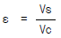
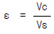
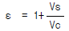
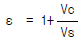
(정답률: 58%)
29. 항공기 왕복기관의 부자식 기화기에서 가속 펌프의 주 목적은?
- 고출력 고정시 부가적인 연료를 공급하기 위하여
- 이륙시 엔진 구동펌프를 가속시키기 위해서
- 높은 온도에서 혼합가스를 농후하게 하기 위해서
- 스로틀(throttle)이 갑자기 열릴 때 부가적인 연료를 공급시키기 위해서
(정답률: 72%)
30. 다음 브레이톤 사이클의 열효율을 구하는 식은? (단, 압력비: r, 비열비:K)
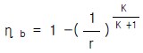
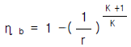
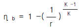
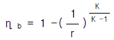
(정답률: 70%)
31. 물질의 질량에 가해지는 힘의크기를 식으로 나타낸 것은? (단, F= 힘, m=질량, a=가속도)
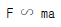
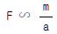
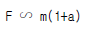
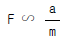
(정답률: 87%)
32. 고출력 왕복기관에 사용되는 일종의 압축기로 혼합가스 또는 공기를 압축시켜 실린더로 보내어 큰 출력을 내도록 하는 것은?
- 기화기
- 공기 덕트
- 매니폴드
- 과급기
(정답률: 64%)
33. 터빈 엔진의 배기 가스 특징으로 가장 올바른 것은?
- 아이들 시 일산화탄소가 작다.
- 가속 시 일산화탄소가 많다.
- 가속 시 질소산화물이 많다.
- 아이들 시 질소화합물이 많다.
(정답률: 42%)
34. 제트엔진의 연료 소비율(TSFC)의 정의로 가장 옳은 것은?
- 엔진의 단위시간당 단위추력을 내는데 소비한 연료량이다.
- 엔진이 단위거리를 비행하는데 소비한 연료량이다.
- 엔진이 단위시간 동안에 소비한 연료량이다.
- 엔진이 단위추력을 내는데 소비한 연료량이다.
(정답률: 73%)
35. 터보 팬 엔진의 팬 트림 밸런스에 관하여 가장 올바른 것은?
- 엔진의 출력 조정이다.
- 정기적으로 행하는 팬의 균형 시험이다.
- 팬 블레이드를 교환하여 한다.
- 밸런스 웨이트로 수정한다.
(정답률: 53%)
36. 왕복기관의 노크발생과 가장 관계가 먼 것은?
- 점화시기
- 연료-공기 혼합비
- 회전속도
- 연료의 기화성
(정답률: 42%)
37. 오일 오염의 가장 큰 원인은 무엇인가?
- 피스톤으로 부터 벗겨져 나간 탄소
- 베어링의 금속입자
- 희박계통
- 슬러지
(정답률: 51%)
38. 항공기 엔진의 후화(AFTER FIRING)의 가장 큰 원인은?
- 빠른 점화시기
- 흡입 밸브의 고착
- 너무 희박한 혼합비
- 너무 농후한 혼합비
(정답률: 80%)
39. 왕복기관에서 밸브 오버 랩(valve overlap)의 가장 큰 장점이 되는 것은?
- 배기밸브의 냉각을 돕고 더많은 출력을 얻는다.
- 후화(after fire)를 방지한다.
- 배기가스(Exhaust Gas)를 속히 배출시킨다.
- 혼합기(mixture Gas)를 실린더내에 더 많이 넣어준다
(정답률: 27%)
40. 터빈 깃(vane)이 압축기 깃보다 더 많은 결함(damage)이 나타난다. 이는 터빈 깃이 압축기 깃보다 더 많은 무엇을 받기 때문인가?
- 열응력
- 연소실내의 응력
- 추력간극(clearance)
- 진동과 다른 응력
(정답률: 70%)
3과목: 항공기체
41. 마그네슘 합금의 규격은 일반적으로 다음과 같은 ASTM의 기호를 사용하고 있다. 설명 내용이 틀린 것은?
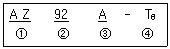
- ①은 함유원소
- ②는 합금원소의 중량 %
- ③은 용도
- ④는 열처리 기호
(정답률: 75%)
42. 고정 지지점(Fixed support)에 대한 내용으로 가장 올바른 것은?
- 수직 반력만 생긴다.
- 저항 회전모멘트 반력만 생긴다.
- 수직 및 수평반력이 생긴다.
- 수직 및 수평반력과 동시에 저항 회전모멘트 등 3개의 반력이 생긴다.
(정답률: 64%)
43. semi-monocoque 구조에 대한 설명 내용으로 가장 관계가 먼 것은?
- 금속제 항공기에 많이 사용된다.
- 동체의 길이 방향으로 세로대와 스트링어가 보강되어 있어 압축하중에 대한 좌굴의 문제점이 없다.
- 공간 마련이 용이하다.
- 정역학적으로 정정인 구조물이다.
(정답률: 60%)
44. MS20470D5-2리벳에 대한 설명중 가장 올바른 것은?
- 유니버설 머리 리벳으로 2017알루미늄 재질이며,지름 5/32″, 길이 2/16″ 이다.
- 둥근머리 리벳으로 재질은 2024이며, 지름 5/16″, 길이는 2/16″ 이다.
- 납작머리 리벳으로 재질은 2017이며, 지름은 5/32″, 길이는 2/16″ 이다.
- 브레이져 머리 리벳으로 재질은 2024이며, 지름 5/16″, 길이 2/16″ 이다.
(정답률: 67%)
45. 안전결선 작업을 신속하고, 일관성 있게 하거나 와이어(wire)를 절단하는 데에도 사용할 수 있는 공구는?
- diagonal cutter
- wire twister
- interlocking plier
- cannon plier
(정답률: 80%)
46. 육각 BOLT에 대한 설명으로 가장 올바른 것은?
- 볼트는 머리(head)와 그립(grip)로 구성되어 있다.
- 볼트의 길이는 그립(grip)의 길이를 말한다.
- 일반적으로 볼트의 식별을 위해 머리에 식별기호가 있다.
- 볼트의 길이는 1/16inch 단위로 표시한다.
(정답률: 64%)
47. 항공기의 무게와 평형에서 유효하중 이란?
- 항공기에 인가된 최대무게이다.
- 항공기내의 고정위치에 실제로 장착되어 있는 하중이다.
- 최대허용 총무게에서 자기무게를 뺀 것을 의미한다.
- 항공기의 무게 중심을 말한다.
(정답률: 74%)
48. 그림과 같은 보에 있어서 굽힘 모멘트 선도가 올바르게 그려진 것은?
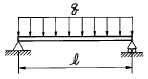
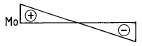
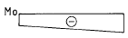
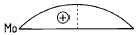
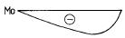
(정답률: 51%)
49. V-n선도에 대한 설명으로 잘못된 것은?
- 정부기관에서 항공기의 유형에 따라 정한다.
- 제작회사에서 항공기 설계시 정한다.
- 제작자에게 구조상 안전하게 설계, 제작을 지시한다.
- 사용자에게 구조상 안전운항 범위를 제시한다.
(정답률: 38%)
50. 판금 작업 시 일반적으로 사용하는 전개도 작성 방법은?
- 평행선법, 삼각형법, 방사선법
- 평행선법, 삼각형법, 투상도법
- 삼각형법, 투상도법, 방사선법
- 평행선법, 투상도법, 사각형법
(정답률: 54%)
51. 양극처리(Anodizing) 설명으로 관계 없는 것은?
- 강철에 처리하기 용이하다.
- 산화 알루미늄 도금이다.
- 부식을 방지하기 위한 도금이다.
- 전기화학적 도금이다.
(정답률: 55%)
52. 항공기 조종계통은 대기온도 변화에 따라 케이블의 장력이 변한다. 이것을 방지하기 위하여 온도 변화에 관계없이 자동적으로 항상 일정한 케이블의 장력을 유지하기 위하여 설치된 부품은?
- 턴 버클(TURN BUCKLE)
- 케이블 장력계(CABLE TENSIONMETER)
- 케이블 장력 조절기(CABLE TENSION-REGULATOR)
- 푸쉬풀 로드(PUSH PULL ROD)
(정답률: 64%)
53. 연료탱크(fuel tank)는 벤트계통(vent system)이 있다. 그 목적으로 가장 올바른 것은?
- 연료탱크(fuel tank)내의 증기를 배출하여 발화를 방지한다.
- 연료탱크(fuel tank)내의 압력을 감소시켜 연료의 증발을 방지한다.
- 연료탱크(fuel tank)를 가압하여 송유를 돕는다.
- 탱크내.외의 압력차를 적게하여 압력 보호와 연료공급을 돕는다.
(정답률: 66%)
54. RETRACTABLE LANDING GEAR에서 부주의로 인해 착륙장치가 접히는 것(retraction)을 방지하기 위한 안전장치가 아닌 것은?
- UP LOCK
- DOWN LOCK
- SAFETY SWITCH
- GROUND LOCK
(정답률: 70%)
55. 날개(wing)의 주요구조 부분이 아닌 것은?
- 스파(spar)
- 리브(rib)
- 스킨(skin)
- 프레임(frame)
(정답률: 82%)
56. AN 310 D - 5R의 NUT에서 5R를 올바르게 설명한 것은?
- 사용 BOLT의 길이가 5/16인치 오른나사
- 사용 BOLT의 직경이 5/16인치 오른나사
- 사용 BOLT의 길이가 5/8인치 왼나사
- 사용 BOLT의 직경이 5/8인치 왼나사
(정답률: 64%)
57. 두께가 0.⑤1인치인 재료를 90° 굴곡에 굴곡반경 0.125 인치가 되도록 굴곡할 때 생기는 세트 백(Set back)은 얼마인가?
- 2.450인치
- 0.276인치
- 0.176인치
- 0.088인치
(정답률: 81%)
58. 서로 밀착한 부품간에 계속적으로 아주 작은 진동이 일어날 경우 그 표면에 생기는 부식을 무엇이라 하는가?
- 표면부식(Surface corrosion)
- 이질 금속간의 부식(Galvanic corrosion)
- 입간부식(Intergranular corrosion)
- 프레팅 부식(Fretting corrosion)
(정답률: 64%)
59. 비금속 재료인 플라스틱 가운데 투명도가 가장 높아서 항공기용 창문유리, 객실내부의 전등덮개 등에 사용되며, 일명 플랙시글라스라고도 하는 것은?
- 네오프렌
- 폴리메틸메타크릴레이트
- 폴리염화비닐
- 에폭시수지
(정답률: 63%)
60. 그림과 같은 외팔보의 자유단에 300㎏, 중앙점에 400㎏의 하중이 작용할 때 고정단 A점의 굽힘 모멘트는 얼마인가?
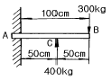
- 5,000 ㎏-㎝
- 7,000 ㎏-㎝
- 10,000 ㎏-㎝
- 20,000 ㎏-㎝
(정답률: 59%)
4과목: 항공장비
61. 에어컨디션 계통에서 믹싱(Mixing or trim)밸브의 기능을 가장 올바르게 설명한 것은?
- 객실공기와 환기실 공기를 섞는다.
- 객실공기와 대기공기를 섞는다.
- 더운공기, 차가운공기, 서늘한 공기의 흐름을 조절한다.
- 습한 공기를 건조한 공기로 만든다.
(정답률: 52%)
62. Ni-Cd 축전지의 취급 방법과 가장 관계가 먼 것은?
- 전해액인 수산화칼륨은 부식성이 매우 크므로 취급시 보안경, 고무장갑, 고무 앞치마등을 착용한다.
- 수산화칼륨의 중화제로는 아세트산,레몬주스가 있다.
- 전해액을 만들때는 수산화칼륨에 물을 조금씩 떨어뜨려 섞어야 한다.
- 완전히 충전된 후 3-4시간이 지나기 전에 물을 첨가해서는 않된다.
(정답률: 62%)
63. 항공기의 항행 라이트(Navigation Light)에 대한 설명 중 옳은 것은?
- 좌측 날개 끝 라이트(Left Wing Tip Light) - 녹색
- 우측 날개 끝 라이트(Right Wing Tip Light) - 적색
- 꼬리날개 라이트(Tail Light) - 백색
- 충돌 방지 라이트(Anti-Collision Light) - 청색
(정답률: 73%)
64. 위성통신 장치에서 지상국 시스템의 송신계에 가장 적합한 증폭기는?
- 저잡음 증폭기
- 저출력 증폭기
- 고출력 증폭기
- 전자 냉각 증폭기
(정답률: 69%)
65. 다음은 항공기가 비행하는데 필요한 항법 장치이다. 무선 원조 항법과 가장 관계가 먼 것은?
- 자동 방향 탐지기(ADF)
- 초단파 전 방향 표시기(VOR)
- 거리 측정 장치(DME)
- 도플러(Doppler) 레이더
(정답률: 66%)
66. 대류권파의 페이딩(FADING) 현상이 가장 심한 주파수는?
- LF
- IF
- VHF
- MF
(정답률: 44%)
67. 3상 교류발전기에서 발전된 전압을 정의 방향으로 순차적으로 모두 합하면 1개의 상전압과 비교할 때 몇배가 되는가?
- 0배
- 1배
- √2배
- √3배
(정답률: 37%)
68. 화재진압장치는 소화용기의 상태를 계기에 지시하도록 되어 있다. 황색 디스크가 깨져있다면 어떤 상태인가?
- 소화용기 내의 압력이 부족하다.
- 화재 진압을 위해 분사되었다.
- 소화용기 내의 압력이 너무 높다.
- 소화기의 교체 시기가 지났다.
(정답률: 51%)
69. 기압 셋트를 29.92inHg로 하고 14,000ft 이상의 고고도 비행을 할 때의 고도 setting방법은?
- QNH setting
- QNE setting
- QFE setting
- QFF setting
(정답률: 64%)
70. 연료량 지시계에서 콘덴서의 용량과 가장 관계가 먼 것은?
- 극판의 넓이
- 극판간의 거리
- 중간 매개체의 유전율
- 중간 매개체의 절연율
(정답률: 66%)
71. 단면적이 1.0cm2, 길이 25cm인 어떤 도선의 전기저항이 15Ω 이었다면 도선재료의 고유저항은 몇 Ω .cm인가?
- 0.4
- 0.5
- 0.6
- 0.8
(정답률: 48%)
72. 다음 설명 중 자기 콤파스(Magnetic compass)의 북선오차와 가장 관계가 먼 것은?
- 콤파스 회전부의 중심과 피보트가 일치하지 않기 때문에 생긴다.
- 항공기가 북진하다 선회할 때 실제 선회각 보다 작은 각이 지시된다.
- 항공기가 가속 선회할 때 나타나는 오차도 이와같은 원리이다.
- 항공기가 북극 지방을 비행할 때 콤파스 회전부가 기울어지기 때문이다.
(정답률: 48%)
73. 유압회로의 열화작용 이란?
- 회로내에 공기의 혼입으로 기름의 온도가 상승하는것
- 회로내에 기름을 장시간 사용하므로서 온도가 상승하는것
- 회로내에 기름이 부족하여 온도가 상승하는것
- 회로내에 기름이 과대하여 온도가 상승하는것
(정답률: 42%)
74. 교류발전기에서 주파수(f)계산 방식은? (단, f = 주파수(Hz, cps), P : 계자의 극수, N = 분당회전수(r.p.m), V : 전압)
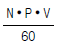
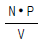
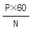
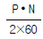
(정답률: 57%)
75. 항공용으로 사용되는 공기압 계통에 대한 설명으로 가장 관계가 먼 것은?
- 대형항공기에는 주로 유압계통에 대한 보조수단으로 사용된다.
- 소형항공기에는 브레이크장치, 플랩작동장치 작동에 사용된다.
- 공기압 누설시 압력 전달에 큰 영향을 주기 때문에 누설 허용은 안된다.
- 공기압 사용시 귀환관이 필요없어 계통이 단순하다.
(정답률: 56%)
76. 항공기 유압회로와 가장 관계가 먼 것은?
- 공급라인(line)
- 압력라인
- 작업 및 귀환라인
- 점검라인
(정답률: 63%)
77. 비행계기에 속하지 않는 계기는?
- 고도계
- 속도계
- 선회경사계
- 회전계
(정답률: 64%)
78. 열전대(thermocouple)는 서로 다른 종류의 금속을 접합하여 온도계기로 쓰이는데, 이의 사용을 가장 올바르게 기술한 것은?
- 사용하는 금속은 동과 철이다.
- 브리지 회로를 만들어 전압을 공급한다.
- 출력에 나타나는 전압은 온도에 반비례 한다.
- 지시계의 접합부의 온도를 바이메탈로 냉점보정한다.
(정답률: 68%)
79. 항공기의 선회율을 지시하는 쟈이로 계기는?
- 레이트(rate)
- 인테그랄(integral)
- 버티칼(vertical)
- 디렉숀날(directional)
(정답률: 38%)
80. 직류 발전기의 계자 플래싱(field flashing)이란?
- 계자코일에 배터리(battery)로 부터 역전류를 가하는 행위
- 계자코일에 발전기로 부터 역전류를 가하는 행위
- 계자코일에 배터리로 부터 정의 방향 전류를 가하는 행위
- 계자코일에 발전기로부터 정의 방향 전류를 가하는 행위
(정답률: 56%)
팽창파는 초음속 흐름에서 발생하는 파동 중 하나로, 속도가 감소하고 압력이 증가하는 파동이다. 따라서 M2보다 M3의 속도가 더 느리고, P2보다 P1의 압력이 더 높다.
반면, 충격파는 초음속 흐름에서 발생하는 파동 중 하나로, 속도가 급격히 증가하고 압력이 급격히 감소하는 파동이다. 따라서 M1보다 M2의 속도가 더 빠르고, P2보다 P1의 압력이 더 낮다.
따라서 "①충격파 M1＞M2, P1＜P2"와 "①충격파 M1＞M2, P2＞P3", "②팽창파 M2＜M3, P1＜P2"은 모두 맞는 설명이다.